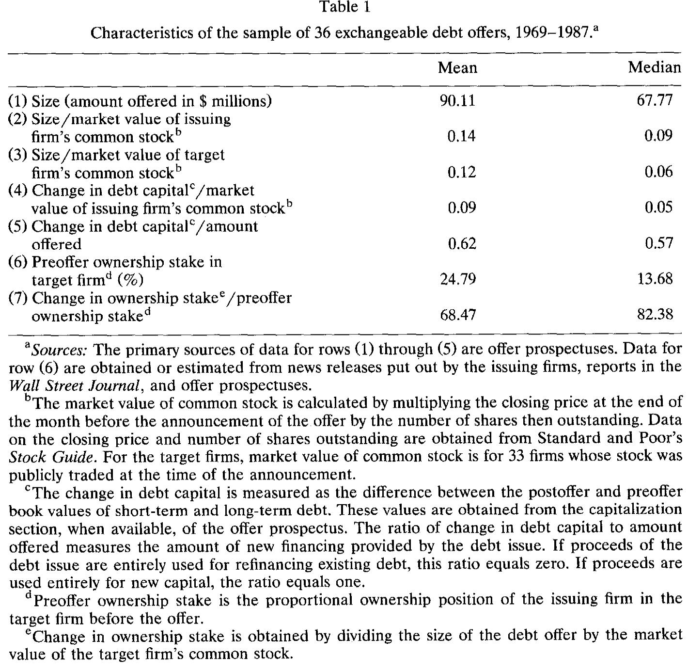
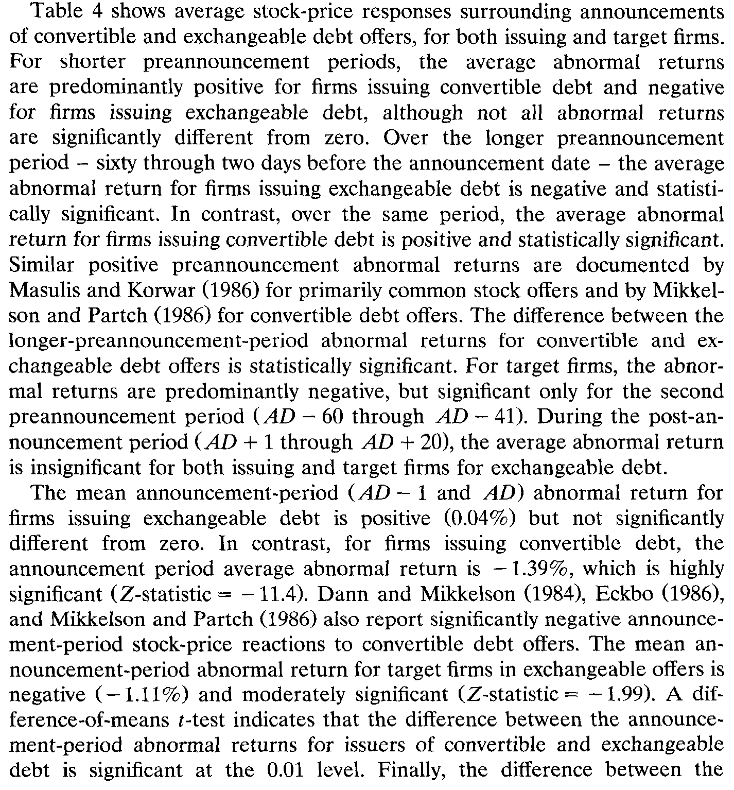
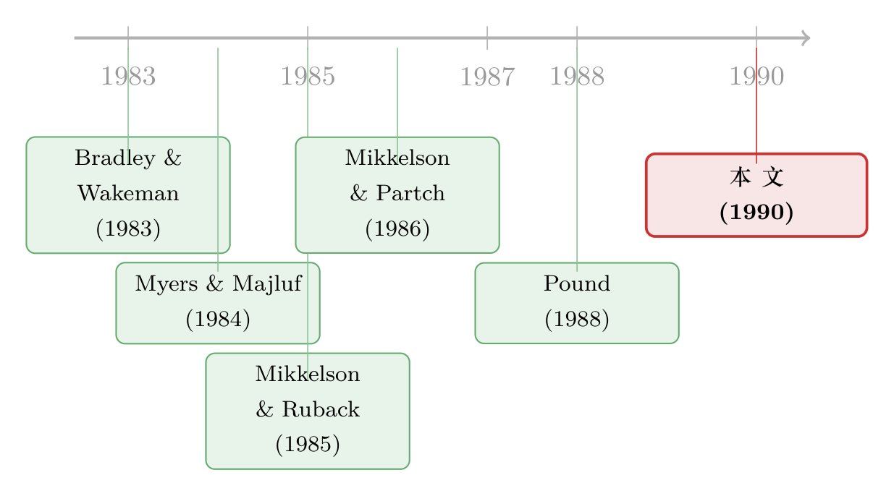

一张「换股票」的债券，为什么发行人毫发无伤，被换的人却先跌了？
本文读的是 Ghosh, Varma & Woolridge (1990, Journal of Financial Economics)：可交换债 (exchangeable debt) 是一种可以转换成别家公司（目标公司）股票的债——发行公司用它来divest自己手里持有的那一块股权。作者发现，宣布发行可交换债时，发行公司的股东几乎毫发无伤（公告期异常收益 +0.04%，不显著），但目标公司的股价却应声下跌（-1.11%，Z = -1.99）。一升一沉之间，藏着公司金融里两条平时各走各路的暗线：资产重组与所有权集中度。
1 一个长得「不太对劲」的可转债
1986 年 1 月，IBM 宣布发行一笔 3 亿美元的债券。听上去平平无奇，直到你读到那行小字：这笔债不是可以转成 IBM 自己的股票，而是可以转成 Intel 的股票——IBM 自 1982 年起持有的那 20% 英特尔股权。市场分析师当时就嗅出了不寻常的味道：这哪里是融资，分明是 IBM 在为它和这家最大芯片供应商之间的联盟「悄悄松手」（Wall Street Journal, 1986-01-28）。
这就是本文的主角——可交换债 (exchangeable debt)。它和我们熟悉的 可转债 (convertible debt) 长得几乎一模一样：都是「债 + 一份转股期权」。唯一的、却也是要命的区别在于，转的是谁家的股票。
- 可转债：转成发行公司自己的股票。一旦转股，发行方债务减少、股本增加，总资产不变。
- 可交换债：转成发行公司持有的目标公司 (target firm) 的股票。一旦转股，发行方债务减少、总资产也减少（那块股权被交了出去），但股本不变。
换句话说，可交换债把一件「融资」的事，和一件「卖资产」的事，焊在了同一张券里。而正是这第二层含义，让它的故事和普通的证券发行彻底分了岔。
关于「可转债其实是一种不好意思直接增发的股权融资」这条直觉，可参见《走后门的股票：可转债为什么是一种「不好意思直接增发」的融资》。可交换债则更进一步，是「走后门的资产剥离」。
2 张力从何而来：两个本该相反的预言
首先，我们得知道一个几乎是公司金融「常识」的事实：公司一旦宣布要做任何形式的外部融资，股价多半会跌。Smith (1986a,b) 把这件事讲得很透——管理层去市场上「要钱」，本身就是一个信号：它在暗示，要么未来盈利低于预期，要么管理层握着一些关于公司内在价值的坏消息。对可转债而言，Dann and Mikkelson (1984)、Eckbo (1986)、Mikkelson and Partch (1986) 反复证实：宣布发行可转债，发行方股价显著下跌。
接着，一个自然的问题是：可交换债既然也是「债 + 转股期权」这副皮囊，它应该也跌，对吧？
但真正关键的一步在于——可交换债不只是融资，它还是一次资产剥离 (divestiture)。而 Mikkelson and Ruback (1985, 1988) 早就发现：当公司把过去为投资或收购而买入的股权卖掉时，股价是正向反应的。
于是张力出现了：
一边是「发证券」的负效应（像可转债那样往下压股价），一边是「卖资产」的正效应（像剥离那样往上托股价）。可交换债同时点着这两根引信。最终股价往哪边走，取决于这两股力的称重。
这，就是本文要回答的核心问题。
3 识别策略：两个样本，一把标准的尺子
这是一篇标准的事件研究 (event study)，方法上没有花活，干净利落，遵循 Brown and Warner (1985)。
公告日 (announcement date, AD) 取两者中较早的一个：(1) Wall Street Journal 首次报道该发行的日期；(2) 该发行向 SEC 或 ICC 登记之日的下一个交易日。每只证券的异常收益，用市场模型 (market model) 的期望收益从实际收益里扣出来：
$$AR_{it} = R_{it} - (\hat{\alpha}_i + \hat{\beta}_i R_{mt})$$
市场模型的参数，用一段 140 个交易日、从事件日前 200 天开始的估计窗口拟合。统计显著性则用 Mikkelson and Partch (1985) 的标准化异常收益算 Z 值，并辅以 Wilcoxon 符号秩检验。
真正聪明的设计，是它的两组对照：
- 处理组：36 笔可交换债。这里又天然分出两个观察对象——发行公司（n = 36）和目标公司（n = 33，三家目标公司发行时尚未公开交易）。
- 对照组：662 笔可转债，由 518 家 NYSE / AMEX 上市公司在同一时段（1969–1987）、用同样的数据源筛出。
对照组的妙处在于：可转债和可交换债共享「发证券」这一负效应，却唯独不共享「卖资产」这一正效应。所以把两组的公告反应一减，差出来的那一块，逻辑上就该归因于资产剥离。
4 数据：36 笔被「闲置」的股权
样本来自两个数据源：Investment Dealer's Digest 的 Directory of Corporate Financing（1969–1987）和 Security Data Company 的 Corporate New Issues 数据库（1980–1987）。作者从直接债和可转债里逐一甄别，挑出 36 笔真正「可交换成另一家公司普通股」的发行，对应 31 家发行公司、32 家目标公司。
这 36 笔交易长什么样？表 1 给了一张速写。

Table 1
几个数字值得停一下：
- 发行规模中位数
$67.71M、均值$90.11M；相对发行公司股本约14%（中位数9%）。 - 发行带来的杠杆变化（债务变动 / 发行公司股本）均值
0.09；新增融资占发行额比例0.62——说明这些发行确实带来了实打实的新外部融资，而非单纯借新还旧。 - 最关键的两行：发行前所有权占比 (preoffer ownership stake) 均值高达
24.79%（中位数13.68%），而一旦转股，将抹掉发行方所持股权的68.47%。
24.79% 是个很大的数字——它高于 Mikkelson and Ruback (1985) 报告的「考虑收购」和「投资」两类 13d 申报的初始持股比例。这暗示着：这些股权，当初十有八九是冲着控制权或某种战略目的买的，如今却成了一块「想甩掉的烫手山芋」。
到底为什么想甩？作者翻遍了新闻稿、招股书、Moody's 手册，把每一笔的来龙去脉都查了一遍：有的是并购里继承来的（如 Cigna 在与 INA 合并时拿到的 24% Paine Webber 股权），有的是 股权分拆 (equity carve-out) 后留下的控股尾巴，有的则是一次流产的收购 (aborted takeover) 留下的残局——通用影业 (General Cinema) 对哥伦比亚影业、对 Heublein 的两次受挫，最后都以可交换债收场。表 3 把这些动机做了归类：流产收购 7 例、改变公司战略重心 3 例、监管要求 2 例，其余 24 例归为笼统的「重组」。
一个绕不开的小谜题：既然只是想卖掉这块股权，为什么不直接在市场上抛售，偏要发可交换债？作者给的答案和可转债的传统解释一脉相承——可交换债能以低于直接债的票息发行，且转股时相当于以更高的有效价格卖出了股票，再叠加税收、发行与销售成本的考量。但作者也老实承认：这个选择「复杂，且多少是个谜」。
5 主结果：一升一沉
现在揭晓那张最重要的表。

Table 4: shows average stock-price responses surrounding announcements
我们一列一列地读（区间均以公告日 AD 为基准）：
先看发行公司的公告期（AD−1 到 AD）。 可转债是 -1.39%，Z 值 -11.37，跌得又狠又显著——和文献完全一致。而可交换债呢？+0.04%，Z 值 -0.37，和零没有任何区别。两者之差在 0.01 水平上显著。这就是本文的第一个核心事实：同样披着「发债转股」的皮，发行可交换债的公司，股东几乎毫发无伤。
再看更长的预公告窗口（AD−60 到 AD−2）。 这里出现了一个有意思的反转：可转债是 +0.95%（Z = 3.26，正且显著），可交换债却是 -4.24%（负，符号秩检验显著）。Masulis and Korwar (1986) 对增发、Mikkelson and Partch (1986) 对可转债都记录过类似的「发行前股价偏高」现象。作者顺势把这条线接到 Myers and Majluf (1984)：管理层倾向于在自家股票被高估时发行与股权挂钩的证券。可转债的正向预公告收益，正是「趁高发行」的影子；而可交换债的预公告收益偏偏是负的——也许正因为管理层觉得自家股票被低估了，才特意选了一种不与自家股票挂钩的证券去融资。
最后看目标公司。 公告期 -1.11%，Z = -1.99，中等显著；在更早的 AD−60 到 AD−41 窗口里，目标公司更是跌了 -4.42%（Z = -2.91）。也就是说：发行公司没事，被「换」的那家公司，反而先疼了。
6 把两股力拆开：为什么是零，为什么是负
到这里，论文真正的解释力才显现出来。
发行公司那个「零」，不是因为这件事无关紧要，而是因为两股力恰好抵消了。 跟着 Smith (1986a,b) 的框架：可转债与可交换债在公告反应上的差别，可归于两点——发行时的杠杆变化、以及转股时的或有杠杆变化。可转债转股时，债务减少、股本增加，是一次较大的「或有去杠杆」；可交换债转股时，债务和总资产同减、股本不动，或有去杠杆较小。这能解释一部分。但更要紧的是那条资产线：可交换债牵涉一次资产重组，而 Mikkelson and Ruback (1985, 1988) 证明剥离股权对发行方价值有显著正向影响。本文逐案梳理的那些「剥离动机」——甩掉不再契合战略的股权、清理流产收购的残局——正是这种正向效应的来源。剥离的收益，抵消掉了股权挂钩证券发行的损失，于是合成出一个非负的、贴近零的反应。
「资产到底好不好卖、剥离能创造多少价值」这条线，和市场对企业资产的可交易性密切相关，可参见《想卖的不是它，能卖的才是它——资产的「流动性」如何决定一家公司拆掉哪块业务》。
目标公司那个「负」，才是本文最反直觉、也最漂亮的一笔。 一个最现成的解释是：发行公司之所以要清仓，是因为它掌握了关于目标公司的坏消息。但作者把这条路堵死了：招股书和新闻报道里没有任何对目标公司不利的信息，反而有发行方专门撇清——General Dynamics 在招股书里白纸黑字写道，它「对 Federal Express（目标公司）的信息并不比其他任何股东知道得多」，且「无意向债券持有人提供有关 Federal Express 的后续信息」。再加上目标公司在预公告期本就跑得差，也不支持「发行方觉得它被高估了」的说法。
那负收益从哪来？作者给的答案是所有权集中度 (ownership concentration)。一旦这块大股权被打散、分散到无数小股东手里：
- Pound (1988) 指出，分散的投票权让潜在的「闹事者」更难识别并联络股东——也就是说，控制权变更的概率下降了。
- 同时，发行公司原本作为大股东去监督、影响目标公司管理层的激励，也随之消失。Mikkelson and Ruback (1988) 据此推断：如果目标公司管理层并非价值最大化者，那么这个「监督者」的离场会让目标股东失望，股价因此下跌。
这恰好呼应了 Brickley, Lease and Smith (1988) 对那一整支文献的总结：提高集中度的交易抬升股价，降低集中度的交易压低股价。 可交换债，正是一场不折不扣的「集中度下降」事件。
注意论证的边界：可交换债要等到真正转股时，目标公司的所有权才被打散。市场在公告日就先把这份「或有的稀释」给定价了——这本身是市场有效性的一个干净体现，但也意味着，结论依赖于投资者对「转股大概率会发生」的预期。
7 文献脉络
把这篇 1990 年的小文放回它的坐标系，能看清它是怎样把几条原本平行的线拧到一起的。
最早的一支，是信息不对称与证券发行：Myers and Majluf (1984) 奠定了「管理层择时发行」的理论，Miller and Rock (1985) 把融资信号与现金流预期联系起来；实证上，Dann and Mikkelson (1984)、Eckbo (1986)、Mikkelson and Partch (1986) 一路坐实了可转债与债务发行的负向公告效应。这一支预言「该跌」。

另一支，是公司间股权投资与剥离：Bradley and Wakeman (1983)、Dann and DeAngelo (1983) 研究定向回购与停火协议，Mikkelson and Ruback (1985, 1988) 则系统刻画了公司间股权投资的形成与处置，给出「剥离创造价值」的证据。这一支预言「该涨」。
还有第三支，是所有权结构与控制权：Pound (1988) 关于代理权争夺与股东监督的效率，Schipper and Smith (1986) 关于股权分拆，Brickley, Lease and Smith (1988) 关于所有权结构与反收购投票，Holderness and Sheehan (1985, 1988) 关于大股东的角色——它们共同告诉我们，所有权集中度本身就是被定价的。
本文的位置，恰在这三支的交汇点：它找到了可交换债这样一个罕见的工具，让「发证券」「卖资产」「散所有权」三件事被同一份合约捆在一起发生，再用一个干净的可转债对照组，把它们各自的价格含义分离出来。
8 评论与延伸（Q&A + 研究方向）
(a) 几个可能的疑问
Q：可交换债和可转债，差别真有那么大吗？
大，而且是结构性的。两者皮囊相同（债 + 转股期权），但转股的后果完全不同：可转债转股是「债换自家股」，总资产不变；可交换债转股是「债换别家股」，总资产减少、等于完成了一次剥离。正是这第二层「卖资产」含义，把可交换债从「该跌」推到了「不涨不跌」。
Q：发行公司接近零的反应，是不是说明市场觉得这事不重要？
恰恰相反。零是两股显著的、方向相反的力相互抵消的结果，而非「无信息」。证据是：和它共享「发证券」负效应、却不共享「剥离」正效应的可转债，跌了
-1.39%，两者之差在 1% 水平显著。所以可交换债的「零」，是被剥离收益顶上来的零。
Q：目标公司下跌，会不会只是因为发行方知道目标公司的坏消息？
作者明确排除了这一点。招股书与新闻里没有任何对目标公司不利的信息，发行方还反复撇清自己「并无信息优势」；而且目标公司预公告期股价本就偏弱，也不支持「发行方觉得它被高估」的解读。剩下能站住的解释，就是所有权集中度下降。
Q：为什么不直接在二级市场卖掉股权，非要发可交换债？
传统的可转债逻辑同样适用：票息更低，且转股相当于以更高的有效价格卖出股票；再叠加公司税、发行与销售成本。但作者也坦言这个选择「复杂、且多少是个谜」——这正是后续研究可以接着挖的地方。
Q：只有 36 个样本，结论可信吗？
这是本文最该打的折扣。作者用标准化 Z 值之外，还辅以 Wilcoxon 符号秩检验来对冲小样本与非正态的问题（比如 AD−60 到 AD−2 的发行公司收益，Z 值本身不显著，靠符号秩检验才显著）。结论方向是稳的，但量级的精度有限，尤其是横截面回归（脚注里那个把公告收益对剥离动机虚拟变量回归的尝试）F 值并不显著。
Q：这对「所有权集中度增值」那条争议有什么含义？
它提供了一个相对干净的「集中度下降」事件。不同于定向回购（同时改变现金与杠杆），可交换债公告时并不立刻改变目标公司的资产或财务结构，只改变其（或有的）所有权分散度。目标公司的负反应，因此成了「集中度下降→价值下降」这一命题的一个较纯的旁证。
(b) 几个可能的研究问题与提案
1. 用现代数据重做可交换债的目标公司效应
【经济故事】可交换债近年在战略减持、ESG 退出、家族企业分散持股中悄然复兴。当年的「所有权集中度」机制，在今天指数化投资、机构持股高度集中的环境里会不会被放大或反转？ 【可行性】中。需要从 SDC / Refinitiv 新发行库里识别 exchangeable 条款（识别成本不低，需手工核验），目标公司用 CRSP 做事件研究。难点在于现代样本量仍可能偏小。
2. 可交换债与目标公司的流动性
【经济故事】大宗股权一旦被打散，目标公司的流通盘扩大、所有权分散，理论上流动性应当改善——这与「监督者离场→价值下降」是两条可以同时检验的暗线。把价格效应和流动性效应分开，能更精细地拆解那
-1.11%。 【可行性】高。用 TRACE / 日内数据构造 Amihud 非流动性或买卖价差，做转股前后的 DiD。识别清晰，数据现成。这条线和《想卖的不是它，能卖的才是它》所讨论的资产可交易性可以打通。
3. 外资大股东借可交换债退出
【经济故事】当一个外资战略股东通过可交换债退出本地目标公司，所有权集中度下降之外，还叠加了「外资监督者离场」的治理含义。外资到底是「蝗虫」还是有效监督者，正是当下争论的焦点。 【可行性】中。需跨国可交换债样本 + 目标公司治理与价格数据，识别上可借「外资 vs. 本地发行方」做异质性比较。样本稀疏是主要障碍。
4. 可交换债的债券端结构定价
【经济故事】可交换债内嵌的，是「目标公司股票看涨期权 + 发行人信用风险」的奇特组合——它把两家公司的风险缝在一张券里。这给结构化信用定价提供了一个天然的实验场。 【可行性】中到低。需要可交换债的逐券条款与二级市场报价（数据极难获取），但模型层面（把发行人违约与目标股价两个状态变量一起建模）是 doable 的，理论贡献清晰。
9 我的判断
贡献。 这篇论文的聪明之处，不在方法（方法朴素到几乎是教科书），而在对象选择。可交换债是一个稀有到近乎被遗忘的工具，但它恰好把公司金融里平时彼此独立研究的三件事——证券发行的信号、资产剥离的价值、所有权集中度的定价——压缩进同一份合约。再配上 662 笔可转债这个几乎完美的对照组，作者得以把「发证券」与「卖资产」两股力干净地分离。最终那个「发行人零、目标负」的结果，本身就是一句话能讲清、却又非平凡的发现。
对识别的担忧。 最大的软肋是样本：36 笔，且跨越 1969–1987 近二十年，制度环境差异不小。横截面上把公告收益归因于具体剥离动机的尝试并不显著，意味着「资产重组正效应」更多是一个合成解释而非被直接估出来的系数——它是从「可交换 − 可转换」的差里反推出来的，而非独立识别的。此外，公告日定义取「WSJ 报道」与「登记日次日」的较早者，预公告期那个 -4.24% 究竟有多少是信息提前泄露、有多少是「趁低不发股」的择时，本文也难以完全分清。
后续想看到什么。 我最想看的，是把目标公司的价格效应与流动性效应正面拆开：所有权打散同时意味着「监督者离场」（压价）和「流通盘变大」（增流动性、或托价），这两股力在 1990 年的数据里没法分，但在今天的 TRACE / 日内数据里完全可以。如果能证明目标公司在转股后流动性显著改善、却价格仍跌，那本文「集中度下降→价值下降」的机制就会被钉得更死；反之，则要重新审视。
参考文献
- Bradley, M. and L. M. Wakeman (1983). The wealth effects of targeted share repurchases. Journal of Financial Economics 11, 301–328.
- Brickley, J. A., R. C. Lease, and C. W. Smith (1988). Ownership structure and voting on antitakeover amendments. Journal of Financial Economics 20, 267–291.
- Brown, S. and J. B. Warner (1985). Using daily stock returns: The case of event studies. Journal of Financial Economics 14, 3–32.
- Dann, L. Y. and H. DeAngelo (1983). Standstill agreements, privately negotiated stock repurchases, and the market for corporate control. Journal of Financial Economics 11, 275–300.
- Dann, L. Y. and W. H. Mikkelson (1984). Convertible debt issuance, capital structure change and financing-related information: Some new evidence. Journal of Financial Economics 13, 157–186.
- Eckbo, B. E. (1986). Valuation effects of corporate debt offerings. Journal of Financial Economics 15, 119–151.
- Ghosh, C., R. Varma, and J. R. Woolridge (1990). An analysis of exchangeable debt offers. Journal of Financial Economics 28, 251–263.
- Masulis, R. W. and A. N. Korwar (1986). Seasoned equity offerings: An empirical investigation. Journal of Financial Economics 15, 91–118.
- Mikkelson, W. H. and M. M. Partch (1985). Stock price effects and costs of secondary distributions. Journal of Financial Economics 14, 165–194.
- Mikkelson, W. H. and M. M. Partch (1986). Valuation effects of security offerings and the issuance process. Journal of Financial Economics 15, 31–60.
- Mikkelson, W. H. and R. S. Ruback (1985). An empirical analysis of the interfirm equity investment process. Journal of Financial Economics 14, 523–553.
- Miller, M. and K. Rock (1985). Dividend policy under asymmetric information. Journal of Finance 40, 1031–1051.
- Myers, S. C. and N. S. Majluf (1984). Corporate financing and investment decisions when firms have information that investors do not have. Journal of Financial Economics 13, 187–221.
- Pound, J. (1988). Proxy contests and the efficiency of shareholder oversight. Journal of Financial Economics 20, 237–265.
- Schipper, K. and A. Smith (1986). A comparison of equity carve-outs and seasoned equity offerings: Share price effects and corporate restructuring. Journal of Financial Economics 15, 153–186.
- Smith, C. W. (1986). Investment banking and the capital acquisition process. Journal of Financial Economics 15, 3–29.